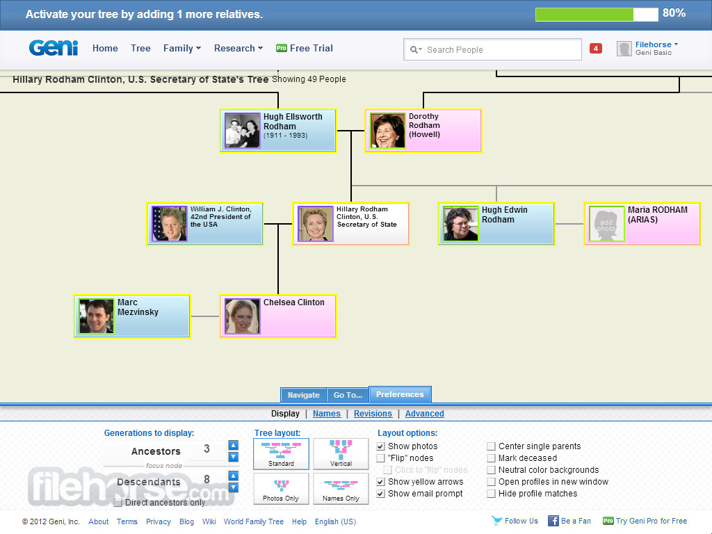
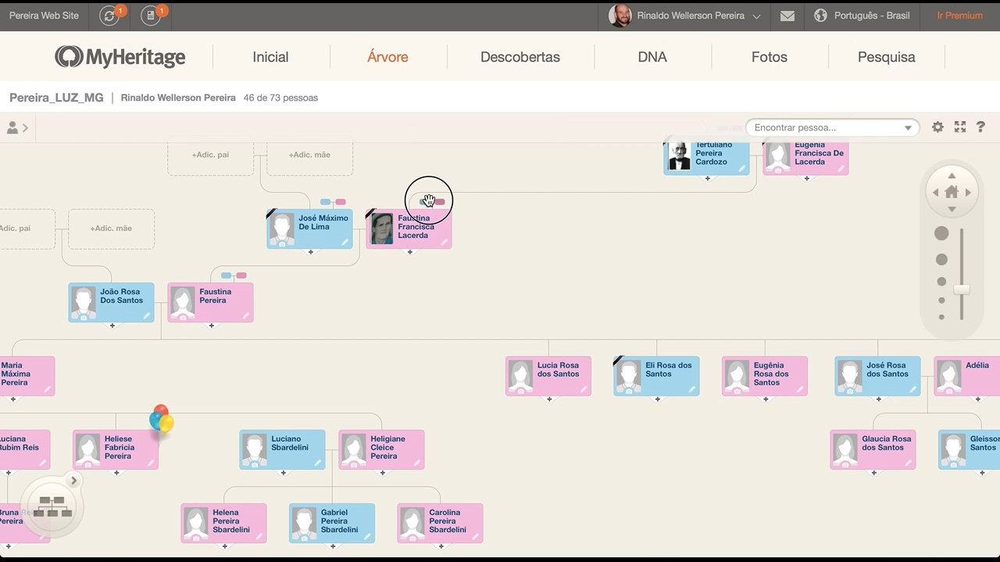
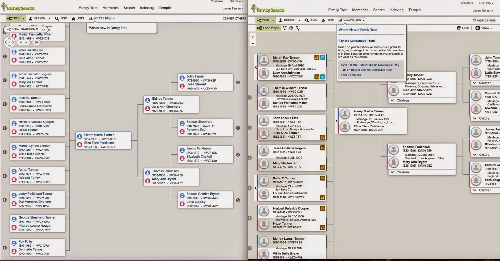
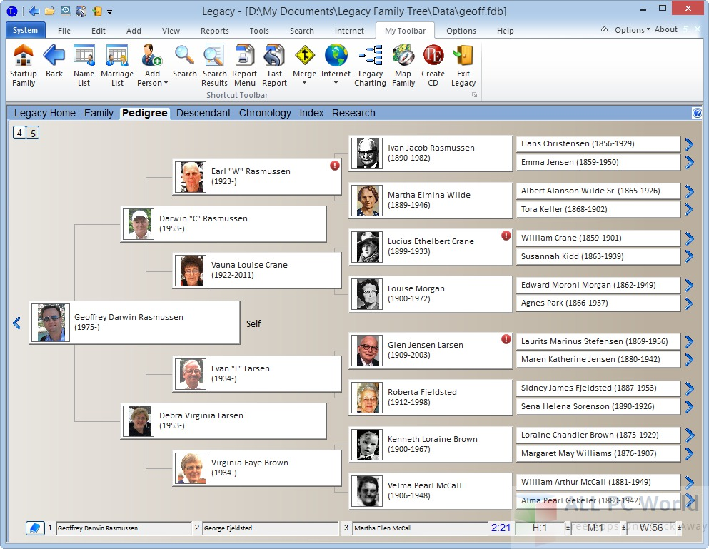
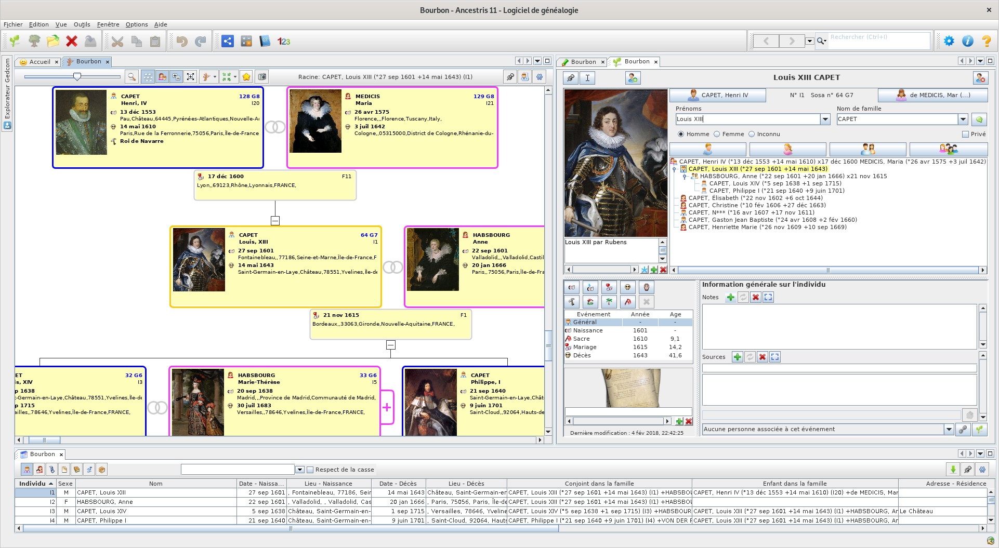

po pierwsze
Dlaczego warto badać swoje korzenie?
Odkrywanie swoich korzeni to wyjątkowa podróż w czasie, która pozwala poznać tętniącą życiem historię Twojej rodziny. Dowiesz się, skąd pochodzą Twoi przodkowie, jakie mieli zawody, jakie były ich pasje i jak wpłynęli na świat, w którym żyjemy. To fascynująca przygoda, która pozwoli Ci lepiej zrozumieć swoją tożsamość i miejsce w historii.
Drzewo genealogiczne na trzech platformach
Chcemy ułatwić Ci badanie genealogiczne, dlatego możesz wybierać spośród trzech popularnych platform:
Geni
Geni (polecane): Geni to interaktywna platforma społecznościowa, która umożliwia łatwe tworzenie i dzielenie się drzewem genealogicznym z rodziną i innymi badaczami genealogicznymi. Geni jest polecane ze względu duża swobodę współpracy pomiędzy członkami rodziny i zaangażowanych przy budowie drzewa. Link do już utworzonego drzewa można znaleźć tutaj: link.
MyHeritage
MyHeritage: MyHeritage oferuje zaawansowane narzędzia do badania genealogicznego, badania DNA oraz budowania pięknego drzewa genealogicznego online. Link do już utworzonego drzewa można znaleźć tutaj: link.
FamilySearch
FamilySearch: FamilySearch to bezpłatna platforma genealogiczna utrzymywana przez Kościół Jezusa Chrystusa Świętych w Dniach Ostatnich. To świetne miejsce do rozpoczęcia poszukiwań swoich przodków.
Twórz drzewo offline
Nie musisz ograniczać się do platform internetowych. Możesz także tworzyć swoje drzewo genealogiczne offline, używając specjalistycznych programów genealogicznych. Oto niektóre z popularnych programów do tworzenia drzewa genealogicznego offline:
- 
Legacy Family Tree: Potężne i łatwe w obsłudze narzędzie, które pozwala na przechowywanie informacji o Twoich przodkach, dodawanie zdjęć, historii i wiele więcej.
- 
Ancestris: Jest to kolejny darmowy program genealogiczny dla systemu Linux. Oferuje zaawansowane funkcje, takie jak importowanie i eksportowanie danych w różnych formatach, zarządzanie zdjęciami, generowanie raportów i wiele więcej.

Podziel się swoimi odkryciami!
Jedną z najpiękniejszych rzeczy w badaniu genealogicznym jest możliwość dzielenia się odkryciami z innymi. Zachęcamy Cię, abyś podzielił się swoim drzewem genealogicznym i historią rodziny na platformach takich jak Geni, MyHeritage i FamilySearch. Dzięki temu inni mogą odkryć swoje połączenia z Twoją rodziną i razem możecie odtworzyć więzi, które przez lata mogły zostać zagubione. Nie tylko wzbogacisz historię swojej rodziny, ale także poznasz wartościowych ludzi, którzy mają wspólne korzenie. A jeśli wolisz zachować prywatność, możesz również tworzyć swoje drzewo genealogiczne offline za pomocą dedykowanych programów, które pozwolą Ci zgłębiać fascynującą historię Twojego rodu.